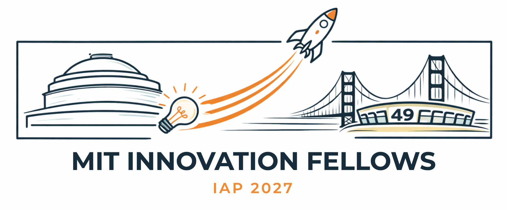

Pitch to investors
Hold candid office hours with investors. Learn how they evaluate early-stage companies, what makes a company fundable, and which milestones to hit next.

Take your startup idea to the heart of Silicon Valley.
Spend two weeks this January in Palo Alto, making the kind of progress that is hard to make from campus alone. Pitch to investors. Meet your future customers. Learn from MIT alumni founders. Spend time with industry leaders. Finish with a pitch-day presentation, where the winning startup, chosen by a panel of venture capitalists, receives a $50,000 pre-seed award.
Two focused weeks, built around your goals. A few shared sessions create community and access, and most of your time is yours to pursue customers, partners and investors.
Hold candid office hours with investors. Learn how they evaluate early-stage companies, what makes a company fundable, and which milestones to hit next.
Run prearranged buyer and user meetings, find design partners, test pricing and pilots, and hear the objections you can't hear from campus.
Join small-group conversations with MIT alumni and founders who built companies from zero to scale, and share a meal with them.
Hear firsthand from leaders in AI, robotics and deep tech about building, hiring and selling, with company visits where possible.
Meet a co-founder, advisor, first hire or collaborator. We'll help facilitate targeted introductions where they matter most.
Share progress, challenge each other's assumptions, and get structured feedback from the cohort and facilitators.
Close the program by presenting to a panel of venture capitalists. Show what you believed when you arrived, what you tested, what changed, and what you'll do next. The winning startup receives a $50,000 pre-seed award.
Welcome and team goals. Founder conversations. Customer discovery. Product and distribution. Design-partner meetings. An alumni founder dinner.
Midpoint evidence review. Building and leading a technical company. Fundraising and the next proof point. Choosing your next 90 days. Closing presentations, Pitch Day and a closing reception.
The goal isn't for every company to raise money during IAP. It's for every team to leave with measurable progress, tested assumptions, and better decisions about what to build next.
We're especially interested in teams who can explain:
We'd rather understand how you think than read a lengthy business plan. Teams are evaluated on:
Keep it concise. The application covers seven short sections:
What are you building, for whom, and why does it matter?
Market, business model, differentiation, competitors, go-to-market, and why now.
Prototype, technical milestones, customer discovery, users, pilots, research, funding.
Who you are, your MIT affiliation, your roles, and why you're the right team.
3–5 specific objectives, and who you hope to meet. Be specific; "networking" isn't a goal.
What can two concentrated weeks unlock that you can't do from campus?
A simple budget estimate: airfare, lodging, local transportation, and other expenses.
You may include a short note from someone who knows your work well, such as MIT faculty, a Sandbox advisor, a research advisor or a mentor. It helps to say how they know you, what progress they've seen, and how your team responds to feedback. Teams without a recommendation will not be disadvantaged.
Applications close Friday, October 23.
Questions? dome2startup@lists.csail.mit.edu